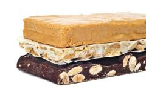
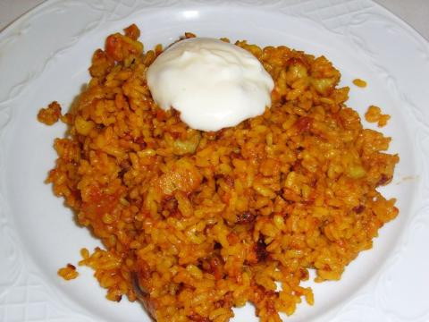
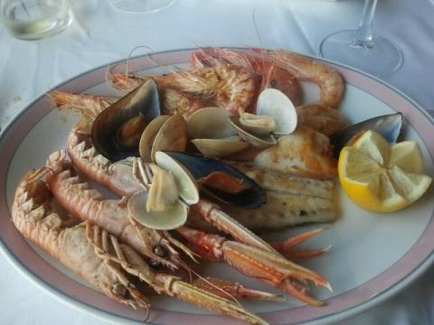
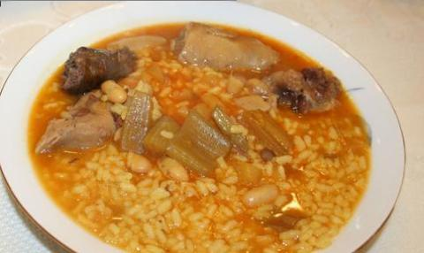
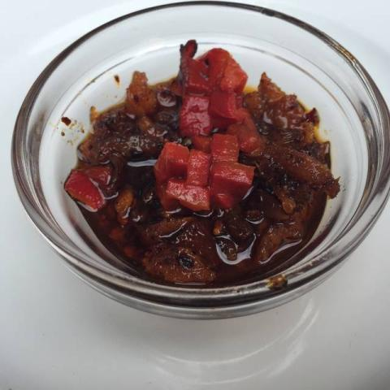
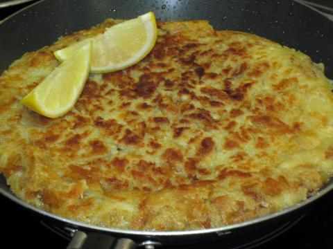
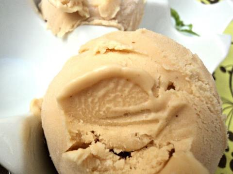

Kulinarisches
Die Provinz Alicante bietet von den Bergen im Hinterland, den herrlichen Stränden an der Küste und Spuren der großen alten Kulturen eine große Vielfalt und dazu noch ein wunderbares Klima. Diese Vielfalt spiegelt sich auch im historischen und gastronomischen Reichtum der Region wieder.
Seit dem Zeitalter der Phönizier, Römer und Muslime hat die Costa Blanca eine interessante Entwicklung hinter sich, die die Kochkunst auf Basis von Reis, Meeresfrüchten und einer großen Auswahl an Gewürzen und Fleisch bereichert. Geprägt durch den Einfluss und die Tradition des mediterranen Raumes ist hier das Essen etwas zum genießen und zum lernen, weil es Sie lehrt, wie man mit wenig viel erreicht und etwas vollkommenes ohne ein starres Schema von Zutaten schafft.
Reden wir über eines der grundlegenden Elemente in der alicantinischen Küche: „Salsa Aioli“. Diese Mischung aus Olivenöl und Knoblauch ist die Basis für viele Gerichte aus Alicante, in der Regel im Verbund mit Meeresfrüchten. Diese Sauce hat ihren Ursprung in der arabischen Welt und ist ein ewiger Protagonist der Esskultur von Italien, Frankreich und vielen anderen Ländern Europas und Afrikas.
Typisches aus Alicante
Im Bereich Obst und Gemüse ist die Orange unbestreitbar die Quintessenz von Alicante. Obwohl sie im Oktober und den ganzen Winter über geerntet werden, steht diese Frucht tatsächlich fast das ganze Jahr zur Verfügung.Die typischsten Gerichte werden in Alicante mit Reis zubereitet. Der unbestrittene Star ist die berühmte Paella. Die Paella besteht aus Reis, Huhn, Kaninchen, grünen Bohnen und weißen Bohnen.
Andere traditionelle Gerichte sind „Arroz al horno“ (gebackener Reis), „Arroz a banda“ (Reis mit Meeresfrüchten), „Arroz negro“ (Reis mit Tintenfisch), „Arròs amb fesols i naps“, ein saftiger Reis mit Bohnen und Rüben, und dann haben wir die „Fideuá“, aus Nudeln und Meeresfrüchten, gewürzt mit Safran, die auch in Valencia ein typisches Gericht ist. Die Fideuá ist eines der Gerichte, die Sie unbedingt probieren müssen, wenn Sie nach Alicante gehen.
Wie auch in anderen spanischen Regionen, so genießen auch in Alicante die berühmten „Tapas“ viel Zustimmung. Patatas Bravas, gegrillte Tintenfische, Muscheln, Sardellen in Essig und Kabeljau-Kroketten sind nur einige von ihnen, die ideale Begleitung für ein kaltes Bier oder eine gute Sangria!
Erwähnenswert ist auch die Weinkultur, denn Alicante produziert Trauben und Weine von Weltruf. Einige der Arten von Trauben, die in Alicante hergestellt werden: Garnacha, Monastrell, Tempranillo, Bobal, Cabernet Sauvignon, Merlot, Pinot Noir und Syrah, alles rote Sorten sind. Weiße Sorten sind Muscat de Alexandria, Planta Fina, Merseguera, Chardonnay, Verdil, Sauvignon Blanc, Airén und Macabeo.
Turrón aus Jijona
Einige der traditionellen Süßigkeiten Alicantes haben einen starken arabischen Einfluss, daher ist die Verwendung von Mandeln und Honig sehr verbreitet. Zu den beliebtesten Desserts in Alicante gehören "almojabanes", "rosetones", "Arrop i tallaetes i Arnadí" (Kürbis, Süßkartoffel und süße Mandeln). Das beliebteste aller Desserts jedoch ist, besonders zu Weihnachten, der Turrón aus Mandeln und Zucker. Guten Appetit!
Einige typische Rezepte
(alle Zutatenmengen für 4 Personen)
Arroz a banda
Ursprünglich wurde dieses Reisgericht mit dem Fisch zubereitet, der bei dem Verkauf in der Fischhalle übrig geblieben war - wie Seehecht oder Seeteufel - und mit Kartoffeln und Zwiebeln gekocht. Der Reis wurde dann im Fischbouillon gegart und als Beilage zum Fisch gereicht, daher der Name: Arroz "a banda", was so viel heißt, wie Reis "separat serviert". Der Reis wird normalerweise mit Alioli gereicht. Zeit: ca. 60 Minuten.
Zutaten
- 2 kg gemischter Fisch
- Salz
- Frisch gemahlener Pfeffer
- 1 Zitrone
- 1 Liter Wasser
- 1 Zwiebel
- 1 Lorbeerblatt
- 2 Nelken
- 3 EL Olivenöl
- 2 Knoblauchzehen
- 400 g Rundkornreis
- 1∕2 Tüte Safran
- 1∕2 TL Paprikapulver (edelsüß)
Zubereitung
- Den Fisch waschen, trocknen und klein schneiden.
- Die Zitrone auspressen.
- Den Fisch in eine Schüssel geben und den Zitronensaft darüber geben.
- 1 l Wasser in einem Topf erhitzen.
- Die Zwiebel pellen und mit dem Lorbeerblatt spicken.
- Die Zwiebel in das Wasser geben.
- Aufkochen lassen.
- Die Fische in das Wasser geben und 20 Minuten ziehen lassen bis sie gar sind.
- Den Fisch aus dem Wasser nehmen, die Brühe nicht weg gießen.
- Olivenöl in einer Pfanne erhitzen.
- Den Knoblauch pellen und fein würfeln.
- Reis und Knoblauch im Öl anbraten.
- Mit der Fischbrühe angießen.
- Mit Safran, Paprika, Salz und Pfeffer würzen.
- Den Reis 20 Min. dünsten, bis er die Flüssigkeit vollständig aufgenommen hat.
- Reis und Fisch werden traditionell nicht gemeinsam serviert, sondern erst der Reis und dann der Fisch. Das muss man aber nicht machen.
Fideuá
Fideuà stammt ursprünglich aus der Ortschaft Gandia in der Provinz Valencia und ist von der Paella abgeleitet. Dabei werden anstelle von Reis aber Fadennudeln (fideos) verwendet, die dem Gericht auch ihren Namen gaben. Zeit: 55 Minuten

Zutaten
- 3 Paprika (rot, gelb und grün)
- 1 Zwiebel
- 2 Knoblauchzehen
- 750 g möglichst aromatische Tomaten
- 200 g rohe Garnelen in der Schale (16 Stück)
- 500 g Seeteufel (filetiert)
- 4 EL Olivenöl
- Salz
- Frisch gemahlener Pfeffer
- Gemahlener Safran
- 2 TL Edelsüß-Paprika
- 400 ml Fischfond oder ein Fertigprodukt
- 300 ml Wasser
- 300 g Fadennudeln (Fideos)
- Einige Stiele glatte Petersilie
Zubereitung
- Zwiebel und Knoblauch pellen und fein würfeln.
- Die Paprika waschen, trocknen, den Stielansatz herausschneiden, vierteln, das Kerngehäuse entfernen und in Streifen schneiden.
- Die Tomaten waschen, trocknen und würfeln.
- Die Garnelen vom Panzer befreien, dabei die Schwanzflossen an dem Garnelenfleisch lassen, den Darm entfernen, waschen und trocknen.
- Das Seeteufelfilet waschen, trocknen und in kleine Stücke schneiden.
- Öl in eine Pfanne erhitzen und die Garnelen und den Seeteufel darin anbraten.
- Dabei mit Salz und Pfeffer würzen, aus der Pfanne nehmen.
- Wenn nötig weiteres Öl in die Pfanne geben, das alte Öl aber nicht entsorgen sondern weiter benutzen.
- Die Zwiebeln in der Pfanne glasig andünsten.
- Knoblauch, Paprika und Tomaten hinzu geben und 10 Minuten schmoren lassen.
- Mit Salz, Pfeffer, edelsüßem Paprika und Safran würzen.
- Den Fischfond und das Wasser angießen und aufkochen lassen.
- Die Nudeln dazu geben und alles maximal 10 Minuten garen lassen, dabei immer wieder umrühren.
- Die Garnelen und den Seeteufel auf den Nudeln verteilen.
- Den Backofen auf 175 °C vorheizen.
- Alles gut 15 Minuten backen lassen.
- Petersilie waschen und trocknen, die groben Stile entfernen und über das Gericht geben.
Parrillada de marisco
Fisch und Meeresfrüchte am Grill. Zeit: ca. 1 Stunde
Zutaten
- Olivenöl
- Langschwanzkrebse
- Kronenhummer
- Venusmuscheln
- 1 Zitrone
- Salz
- Fisch (nach Wahl)
Zubereitung
- Fisch waschen und salzen, und mit einem guten Schuss Olivenöl in Servierteller geben.
- Grillplatte auf mittlere Temperatur erhitzen. Wenn man den Fisch darauflegt, Hitze für 6 bis 7 Minuten erhöhen.
- Hitze senken und auf beiden Seiten rund 6 Minuten anbraten.
- Vom Feuer nehmen und auf Servierteller verteilen. Grillplatte reinigen.
- Die Kronenhummer in der Mitte vom Schwanz bis zum Kopf öffnen, damit sie ganz bleiben.
- Salzen und mit ein wenig Olivenöl mit jener Seite auf die Grillplatte legen, die geöffnet wurde, damit das Fleisch sich schließt.
- Nach vier Minuten umdrehen. Kronenhummer mit Öl und dem Saft einer halben Zitrone beträufeln, einige Minuten länger auf der Kochplatte lassen und dann in Servierteller geben.
- Grillplatte erneut reinigen, dann mit dem Saft einer halben Zitrone beträufelte Langschwanzkrebse darauflegen.
- Nach 3 bis 4 Minuten umdrehen.
- Von der Platte nehmen und in Servierteller geben.
- Venusmuscheln gut waschen und über Dampf öffnen. Wenn sie geöffnet sind auf Servierteller geben und mit eigenem Saft begießen.
Arròs amb fesols i naps
Reis mit weißen Bohnen und Steckrüben. Zeit: 100 Minuten + Einweichzeit
Zutaten
- 200 g getrocknete weiße Bohnen
- 2 Zwiebeln
- 1 Schweinefuß
- 250 g Kalbfleisch
- 200 g geräucherter Speck
- Salz
- 2 schwarze valencianische Blutwürste
- 2 weiße valencianische Blutwürste
- 4 kleine Steckrüben
- 250 g Rundkornreis
- 1∕2 Tütchen Safran
- Frisch gemahlener Pfeffer
Zubereitung
- Die weißen Bohnen in eine Schüssel geben und über Nacht einweichen lassen.
- Die Bohnen am nächsten Tag abgießen.
- Die Zwiebeln pellen und etwas klein schneiden.
- 1 1∕2 Liter Wasser in einen großen Topf geben und erhitzen.
- Bohnen, Zwiebeln, den Schweinefuß, das Kalbfleisch und den Speck dazu geben und aufkochen lassen.
- Alles eine halbe Stunde köcheln lassen.
- Inzwischen die Steckrüben schälen und würfeln.
- Die Steckrüben und die Blutwürste zur Suppe geben.
- Alles wieder eine halbe Stunde köcheln lassen.
- Den Schweinefuß, das Kalbfleisch, den Speck und die Blutwürste aus der Suppe nehmen.
- Das Fleisch vom Schweinefuß ablösen.
- Alles Fleisch warm stellen.
- Den Reis in die Suppe geben.
- Die Suppe mit Safran würzen.
- Mit Salz und Pfeffer abschmecken.
- Den Reis 15 Minuten dünsten lassen.
- Das Fleisch inzwischen in mundgerechte Stücke schneiden.
- Ist der Reis fast fertig, das Fleisch wieder zum Eintopf geben und heiß werden lassen.
Pericana de Alicante
Die Pericana ist eine typische kleine Zwischenmahlzeit (Tapa) aus dem alicantinischen Hinterland, genau gesagt aus Alcoy. Wichtigste Zutaten sind die Ñora, eine lokal verbreitete Frucht aus der Paprikafamilie, und Pimiento choricero, oder roter Pfeffer, beide in getrockneter Form. Zeit: ca. 30 Minuten
Zutaten
- 2 Zwergdorsche oder Kabeljau
- 2 Knoblauchzehen
- 1/2 Ñora
- 4 getrocknete Pfefferschoten - Choriceros
- 60 ml Olivenöl
Zubereitung
- Den Fisch auf beiden Seiten im vorgeheizten Öl anbraten und beiseite legen.
- Das gleiche mit dem Pferrer und der 1/2 Ñora, aber aufpassen das sie nicht verbrennen.
- Beides abkühlen lassen.
- Währenddessen den Knoblauch schälen und zerkleinern.
- Die Pfefferschoten teilen, die samen entfernen und säubern, dann in kleine Stücke schneiden.
- Die Zwergdorsche zerteilen, Kopf und Gräten entfernen.
- Alles zusammen in eine Schüssel tun und mit Olivenöl bedecken.
Gachamiga
Die Gachamiga ist ein Mittagsgericht, beliebt bei Jägern, Tagelöhnern und Arbeitern, und besteht nur aus wenigen Zutaten. Daraus wird ein goldbrauner Fladen zubereitet. Zeit: 35 Minuten
Zutaten
- 500 g Mehl
- 8 Knoblauchzehen
- 1 Glas Olivenöl
- 2 L Wasser
- Salz
Zubereitung
- Den Knoblauch im Olivenöl anbraten, bis er goldbraun ist.
- Knoblauch aus der Pfanne nehmen und Mehl hinzufügen und zu einer Masse verrühren, ohne es zu verbrennen.
- Danach Wasser hinzugeben und zu einer Masse verrühren, die nicht zu dick ist.
- Den Knoblauch und Salz hinzufügen, bis die Paste schön braun gebraten und das Wasser größtenteils verdampft ist.
- Wenden und die andere Seite braten, bis beide goldbraun gebraten sind.
Helado de turrón
Turrón-Eis. Genug gesagt. Zeit: 15 Minuten (+6 Stunden im Gefrierschrank)
Zutaten
- 550 g Sahne
- 130 g Zucker (braunen Rohrzucker)
- 100 g Turrón de Jijona blando (weich)
- 4 Eigelb
- Eine Prise Salz
Zubereitung
- 500 g Sahne steif schlagen.
- Zucker und 50 g Sahne in den Topf geben und erhitzen.
- Eine Prise Salz hinzugeben.
- Turrón in Stückchen dazugeben.
- Eigelb hinzufügen, bis es eine homogene Masse ergibt.
- Alles zur Sahne hinzugeben und mit einem Schneebesen gut miteinander vermischen, bis es wieder eine homogene Masse ergibt.
- Je nach Geschmack klein gehackten Turrón darüber geben.
- In eine Gefrierdose umfüllen.
- Mind. 6 Stunden einfrieren, gelegentlich heraus nehmen, um Kristallisierung zu verhindern, und 10-15 Minuten vor dem Servieren herausholen.